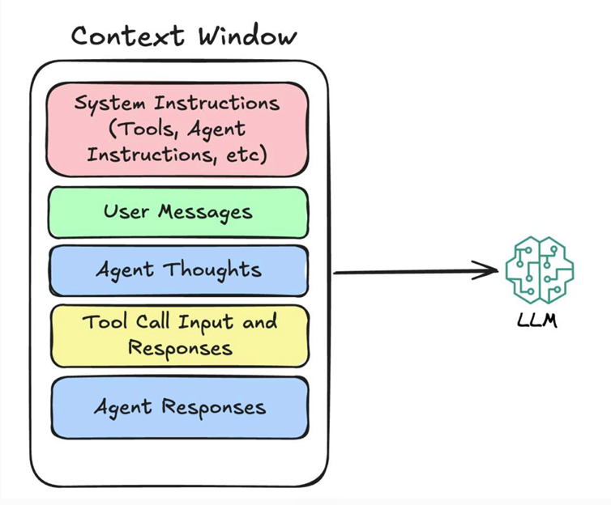

The context window
The model sees exactly what the harness puts into its context, and nothing else.
Understanding this single concept explains most of the confusing behavior researchers encounter. The context window is the total amount of text the model can consider at once, shared across every source of input.
- Modern context windows range from roughly 100,000 tokens to 1 million tokens. Every turn of a conversation, the entire history is re-sent to the model.
- Cost scales with conversation length. A twenty-turn conversation costs more per turn than turn one did.
- Models have no memory between conversations. What looks like memory is the harness reloading context. Close the window, and the model has no idea who you are.
- When the context window fills up, models get confused, forget instructions, and fail in unexpected ways.

Credit: Jason Gilman, Element 84